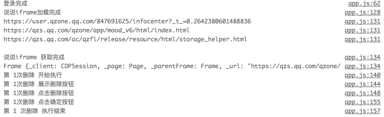

项目背景
emmmm 前几天女朋友想加我qq。才想到 万年没用的qq里面qqZone 遗留着千年前的一堆中二留言 && 中二说说。 刚好最近有接触到 自动化测试 puppeteer 框架， 就想着写个脚本去自动删掉留言板和说说。 整个项目基于 node8 运行 用的 async await语法。
概述
首先 puppeteer 可以理解为 是谷歌出的一个无UI版本的Chrome。

先从 puppeteer 实例化出一个 Browser， 根据 Browser去new 一个 Page。
这个Page可以理解成 我们平时浏览器的一个 tab。 一般操作都是基于 Page去实现的
Page 提供了很多简单易用的api用于操作网页元素， 基本都是异步操作，所以直接用 async/await 非常方便快捷简单易懂。
- 比如获取元素:
page.$('#switcher_plogin') - 在输入框填入特定信息，每次输入间隔100毫秒模拟输入:
page.type('#mytextarea', 'World', {delay: 100}); - 选择下拉框:
Page.select('select#colors', 'blue');
项目细节
项目初始化与登录步骤
首先我们要打开 qq空间 的页面 并登录
1 | // 常用操作的工具函数 |
删除留言板的功能模块
1 | async function delCommit() { |
删除说说模块
1 | async function delEmotion() { |
项目总结
大概代码都丢👆了 ，附上 源码地址 在 a.js 填上账号密码。
再打开源码里面的 // await delCommit(); 或者 // await delEmotion(); 来删除 留言板或说说。没有做并发操作 所以只能执行一种功能。
修改完之后npm install && node app.js 就可以跑了。
项目中遇到几个问题：
page.waitForNavigation(options) 一直等不到完成状态, 30s 超时报错
可能是一直有一些脚本挂掉或者在loading。所以后面换成 等待3秒 虽然比较 low。。。但是可行iframe 里面的dom元素不能直接通过 page.$ 获取，需要先获取 iframe 再通过这个 iframe去获取想要的dom元素
就算是浏览器执行 模拟人为删除，但是连续删除太多行数据的时候， 还是会触发 腾讯的验证码机制。
原本用 puppeteer 截图api 去获取验证码，然后用 Tesseract 去识别验证码。但是发现说 识别的有效率极低… 也没有去折腾数据训练。 后面就放弃验证码这一块的技术识别，出了验证码就先不跑 隔断时间再跑。
最后给出完整的项目演示
删除留言板功能演示
删除说说功能演示
日志输出
